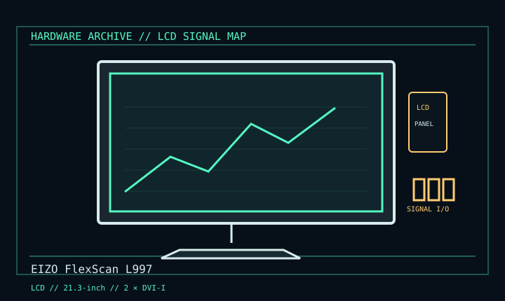

[ INDIVIDUAL COMPONENT // DISPLAYS ]
EIZO FlexScan L997
21.3-inch professional S-IPS LCD, mid-2000s. LCD

IDENTIFICATION: Verify the complete model/revision on the rear label. Specifications are tied to the cited manual/specification; variant-dependent values are qualified rather than generalized.
Specifications
| Catalog subcategory | Lcd Displays |
|---|---|
| Exact product/family | EIZO FlexScan L997 |
| Era | 21.3-inch professional S-IPS LCD, mid-2000s. |
| Panel / image | 21.3-inch S-IPS, 1600 × 1200, 0.270 mm pixel pitch. |
| Inputs / refresh | Two DVI-I inputs; digital vertical 59–61 Hz; analog 49–86 Hz. USB hub and ActiveShot P-in-P. |
| Power | 100–120 / 200–240 V AC, 50/60 Hz; 75 W max, 55 W min per manual. |
| Mechanical | Height-adjustable portrait/pivot stand; 472 mm width. |
Revision, signal & host compatibility
DVI-I socket can carry analog or digital, but the connector does not convert either signal. For digital UXGA use 60 Hz. Verify exact model/firmware, cable and mains label.
Match source signal type, sync/timing, connector pinout, bandwidth and power path to this exact display. Physical connector fit alone does not establish electrical or timing compatibility.
Preservation & repair notes
Record color calibration, serial suffix and panel condition; test both inputs and USB path. Retain stand, utility media and profiles. Clean per EIZO instructions; internal power/panel work needs qualified repair.
Record model suffix, serial/date label, accessories, image condition, configuration, source document and repair history. CRT high-voltage, LCD backlight and OLED panel risks require appropriate service training and the correct manual.
Manufacturer manuals & references
- EIZO FlexScan L997 User ManualManual specifications, supported inputs and care.
- EIZO L997 operating manual mirrorCross-reference for model-specific operating instructions.